视觉-语言-动作模型（VLA）是具身智能的核心大脑。然而真实 VLA 训练面临严峻的“数据冗余与算力墙”：人类遥操作采集的轨迹中普遍存在大量时间冗余（连续数十帧画面几乎不变）、分布冗余（少数简单动作占比过高）与次优噪声。直接在全量数据上训练既耗算力，又会因分布失衡损害泛化。
受人脑预测编码与网状激活系统（RAS）两类认知选择机制的启发，本文构建了一套核心集选择框架：以“首帧/末帧/夹物体帧”三类关键帧为锚点，在成对距离矩阵上做 facility-location 代表点选择。框架的核心是帧间距离的度量方式，本文以两种核心度量为主线对比：动作 + 视觉距离（成对惊奇度，无监督输入几何）与梯度距离（CRAIG）（pilot 末层梯度 + 代表簇重加权，对齐回归目标）。在此之外，本文还进一步把“动作 + 视觉”拆解为仅动作与纯视觉两条对照，并对视觉项用 SAM 3 分割对比整图与抠图（白底，仅保留目标臂/夹爪/立方体），考察背景干扰对视觉选择信号的影响。
在 ALOHA Sim Transfer Cube 数据集上，以冻结的 CLIP 提取图文特征、轻量 MLP 回归 7 自由度动作，并对每种方法跑 5 个种子报告 mean±std。由于右臂 MSE 量级约为左臂的 3～4 倍，两臂“平均”统一采用相对随机的比值（每臂先除以该臂随机基线再取平均，随机 = 1.000、<1 更优），以避免被高量级右臂主导。结果表明：两种核心度量中梯度距离（CRAIG）综合最优——仅用 10% 数据，它在动作更剧烈、分布重尾的右臂上 MSE 相对随机降低 6.9%，是唯一真正赢下重尾右臂的度量，两臂平均（0.975）亦优于随机并逼近全量（0.931）；输入几何度量（动作 + 视觉）则只能在平稳的左臂占优、在右臂上劣于随机。分量消融显示仅动作、纯视觉单独使用均不及二者合用；而对视觉项用 SAM 3 抠掉背景后选点更准，使动作 + 视觉 · 抠图取得全部实验的最佳两臂平均（0.952），但仍无法让输入几何在重尾右臂上占优。
统一框架由两部分构成：以三类关键帧（首帧、末帧、夹物体帧，对应 RAS 的注意力聚焦）为锚点，并在成对距离矩阵上以 facility-location 做代表点选择。其核心差异在于帧间距离的度量方式；本文以两种核心度量为主线，二者对应着对“冗余”从表观冗余到任务冗余的逐步深化，并在其外做进一步的分量消融与视觉净化：
以机械臂动作特征（含速度/加速度）与 CLIP 视觉余弦差异的加权和度量两帧差异，即无监督的成对惊奇度，对应预测编码的“惊奇”——立足表观冗余。
在梯度空间度量帧间距离，将冗余重新界定为任务冗余，并按代表簇质量加权，使加权子集的梯度逼近全量梯度、对齐回归目标。
把“动作 + 视觉”拆为仅动作、纯视觉两条对照；并用 SAM 3 抠出目标臂/夹爪/立方体（白底）替换视觉项，仅改选点信号、不改 MLP 输入。
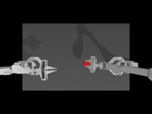
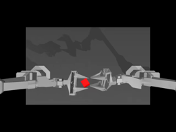
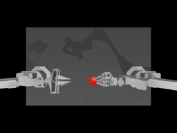
| 方法（除全量外均 10% 预算） | 左臂 MSE | 右臂 MSE | 平均(比值) |
|---|---|---|---|
| 全量（100%） | 3.761 | 11.167 | 0.931 |
| 随机（10%） | 3.901±0.42 | 12.429±0.78 | 1.000 |
| 最远点采样 FPS（k-center 选择，早期对照） | |||
| 仅动作距离 | 4.223 | 13.679 | 1.092 |
| 动作+视觉距离 | 4.348 | 17.012 | 1.242 |
| facility 代表点选择（两种核心度量，本文采用） | |||
| 动作+视觉距离（惊奇度） | 3.387±0.23 | 13.657±1.58 | 0.984 |
| 梯度距离 CRAIG（本文） | 3.972±0.48 | 11.569±0.60 | 0.975 |
| 进一步实验（均 facility、10% 预算） | 左臂 MSE | 右臂 MSE | 平均(比值) |
|---|---|---|---|
| 随机（10%） | 3.901±0.42 | 12.429±0.78 | 1.000 |
| 动作+视觉（核心度量，整图） | 3.387±0.23 | 13.657±1.58 | 0.984 |
| (a) 分量消融：拆解“动作 + 视觉” | |||
| 仅动作距离（wv=0） | 3.925±0.26 | 14.700±1.84 | 1.094 |
| 纯视觉距离（wa=0，整图） | 3.928±0.52 | 14.916±1.20 | 1.104 |
| (b) 视觉项分割净化：整图 φ → 抠图 φseg（SAM 3） | |||
| 纯视觉 · 抠图 | 3.326±0.13 | 13.354±0.96 | 0.964 |
| 动作+视觉 · 抠图（全场最佳平均） | 3.234±0.19 | 13.362±1.02 | 0.952 |
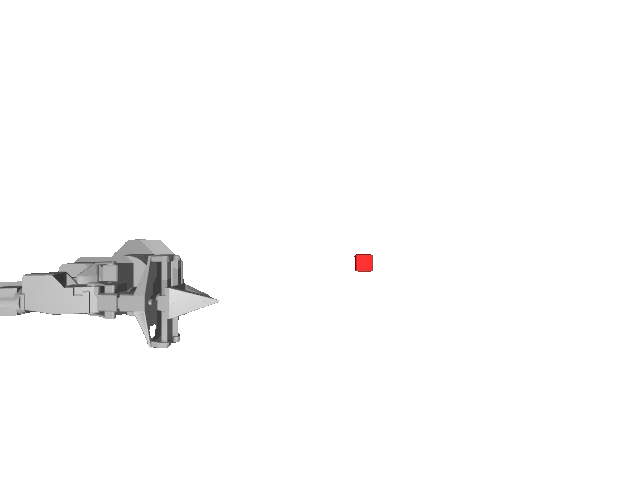
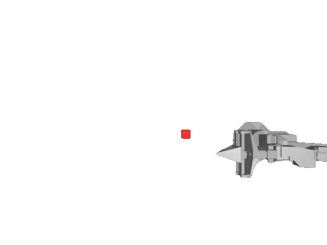
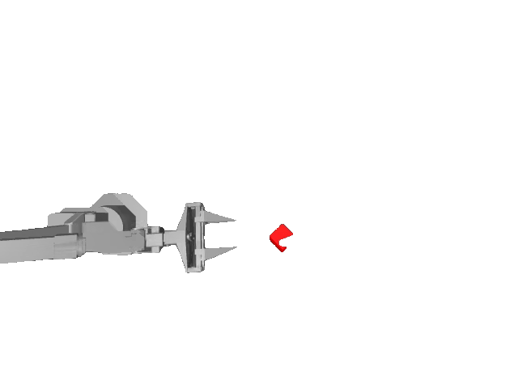
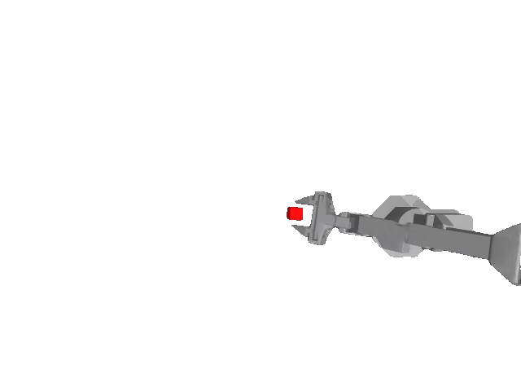
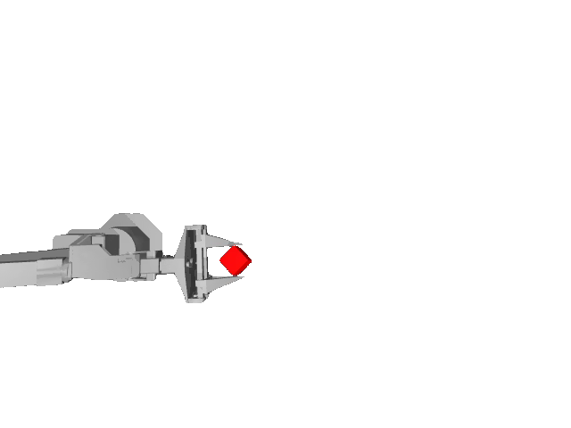
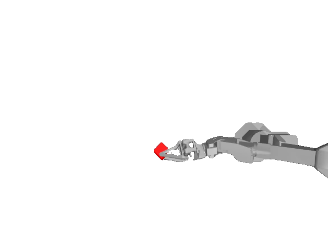
cube／robot arm／gripper 抠出的目标臂 + 夹爪 + 立方体（白底，按检测框中心分左右，左列为左臂、右列为右臂）。仅用抠图特征 φseg 替换距离矩阵的视觉项（MLP 输入仍为整图），即可滤除背景与另一只臂对 CLIP 视觉距离的污染——对应上表 (b) 段两臂 MSE 的一致下降。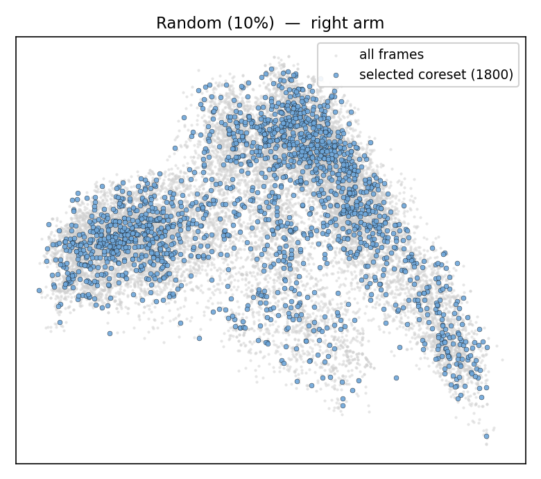
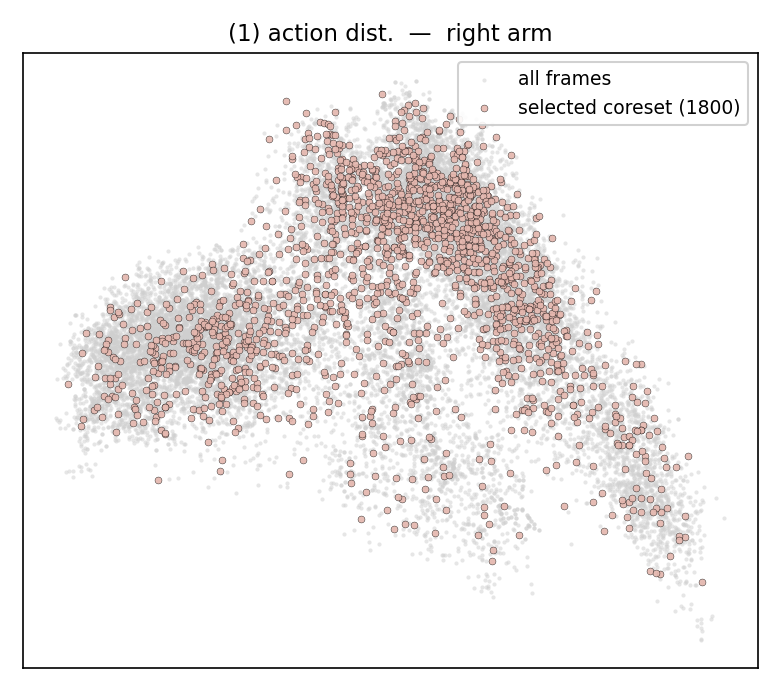
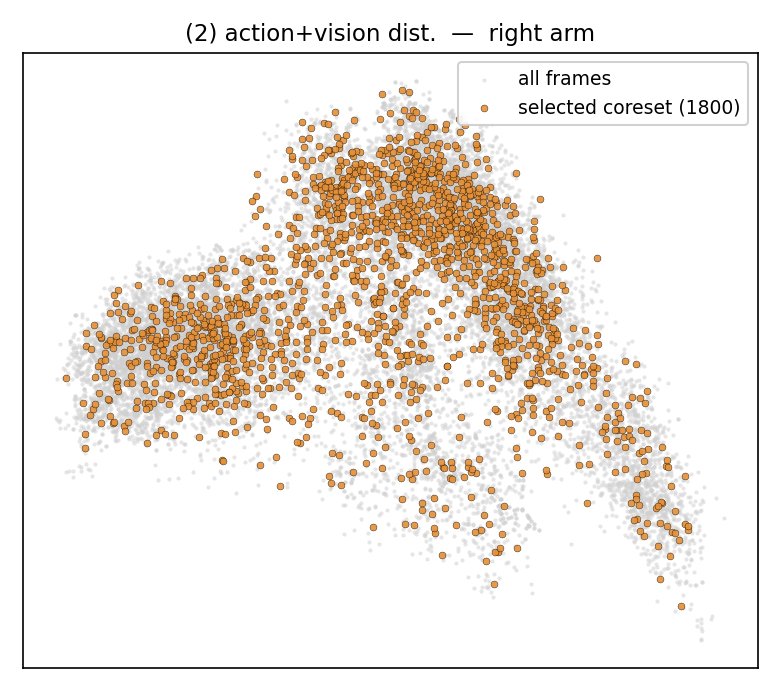
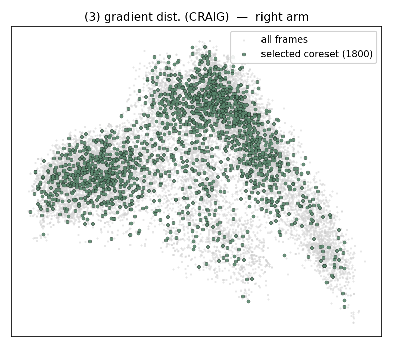
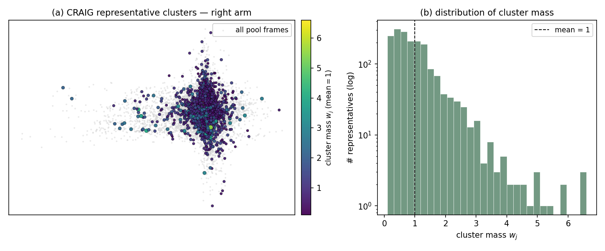
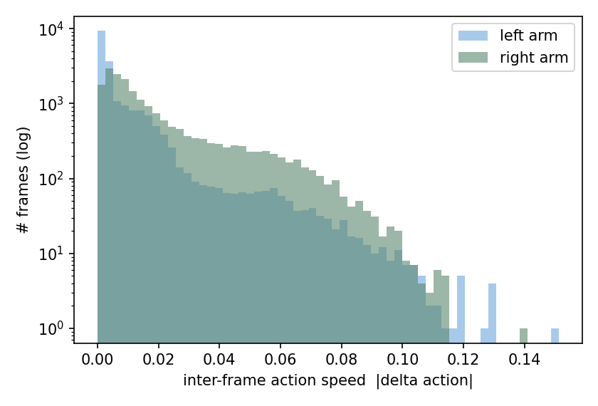
为直观比较不同选择策略所保留样本的时序分布，特将各方法选出的核心集（占训练帧的 10%，每臂 1800 帧）按原始时间顺序重组为视频。所有视频在相同分辨率与帧率下编码，可直接横向对比各方法究竟保留了哪些时段的帧。每只臂先给出主表的四种方法（随机 / 仅动作 / 动作+视觉 / CRAIG），其下再以 2×2「整图 → 抠图」对照呈现「进一步实验」表的纯视觉与 SAM 3 分割净化版本，与定量表 (a)(b) 段逐一对应。
对照各方法的重组视频可见：随机基准在时间轴上近似均匀采样，不可避免地将大量预算分配给静止的冗余帧，仅凭无偏性维持基线水平。基于输入几何的度量（仅动作、动作+视觉）明显聚集于画面或动作变化剧烈的片段；对动作平稳、结构性强的左臂而言，这一偏好恰与数据需求一致（动作+视觉左臂 MSE 3.39，优于随机 3.90），但在动作剧烈且含噪的右臂上则造成预算错配（动作+视觉右臂 13.66、仅动作 14.70，均劣于随机 12.43）。
梯度距离（CRAIG）的视频则显著集中于“接近—抓取—交接”这一任务关键链路：梯度冗余的易帧被折叠进代表簇并以权重计入，真正影响优化的难帧被优先保留。这种任务感知的时序分布与其定量优势相吻合——CRAIG 是唯一真正赢下重尾右臂的度量（右臂 11.57 vs 随机 12.43，相对 −6.9%），其两臂平均比值（0.975）压到随机（1.000）之下并逼近全量（0.931）。可视化与指标共同表明：在重尾子任务上，有效的核心集选择须由“输入几何”转向“梯度／任务感知”。
对应 RAS 对高信息效用瞬间的聚焦：以滞回双阈值在夹具信号上定位“张开→闭合”的下降沿，取夹合程度最大的一帧作为夹物体帧。
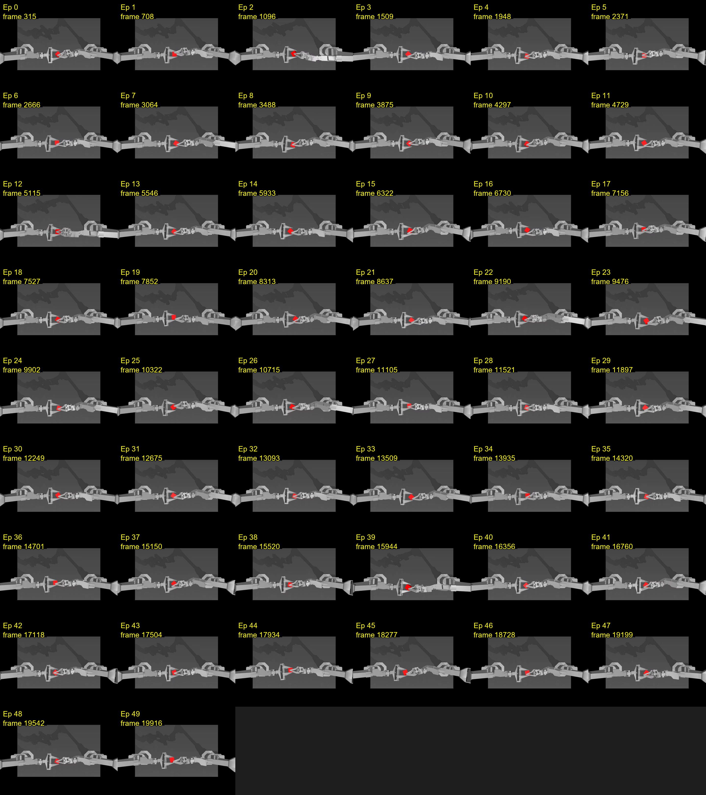
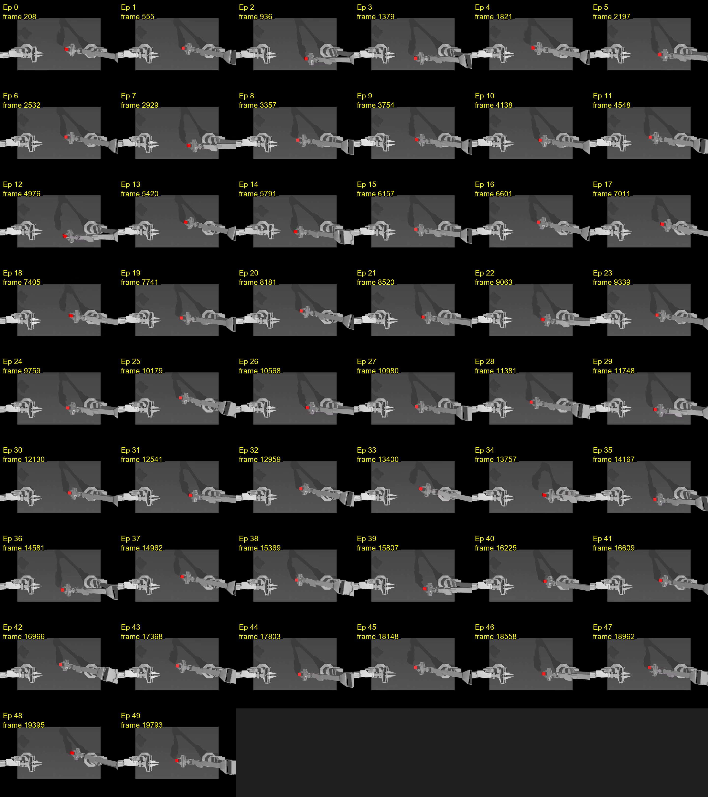
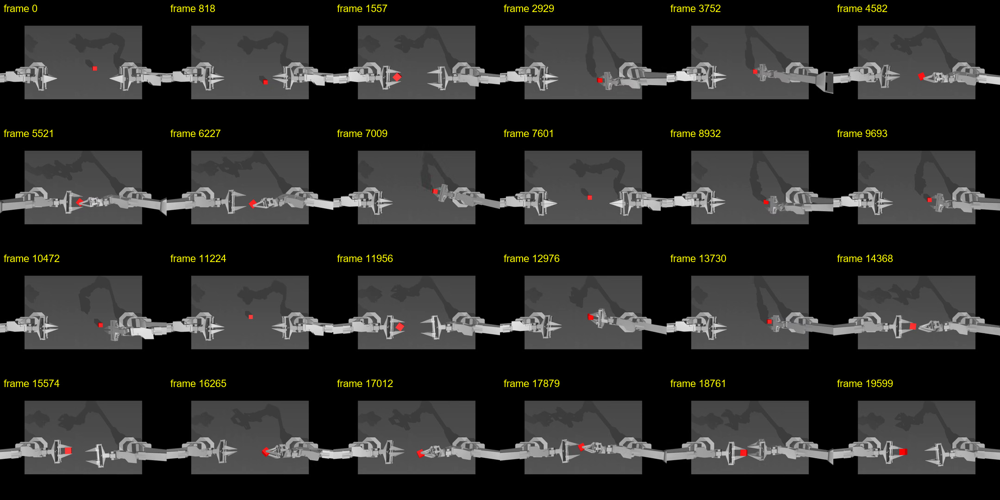